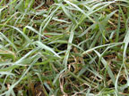
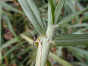

Kikuyu grass
Pennisetum clandestinum
Other names
Description
Low growing perennial (stoloniferous or rhizomatous). Leaves (5 40cm long, 3 10mm wide) have a yellowish colour at the base of the blade and scattered bristles on the short shoots. The flowers (rarely produced in NZ) are hidden in upper leaf sheaths, only the anthers and stigma visible. It is often seen as areas of bright yellowish green lush patches in a paddock or along fence lines. Leaves die off in frost.
Similar plants
Other grasses.
Distribution
It is widely established in Northland and South Auckland areas. Found particularly in warm, humid and damp areas on a range of soils. Growing season is from mid spring to mid autumn.
Toxin
Inflammation and necrosis of the alimentary tract is the main toxic effect produced, although the specific toxin has not been identified it is thought that after army worm (Spodoptera exempta) parasites have been through kikuyu pastures it allows a symbiotic fungus (Myrothecium roridum and M. verrucaria) to come in and produce a necrotising mycotoxin. Cultures of these mould produce the same clinical signs as kikuyu poisoning. Nitrate / nitrite and oxalate poisoning have also been recorded in Australia.
Species affected
Dairy cattle are worst affected, although sheep can be (but are much less susceptible).
Clinical signs acute
The onset of clinical signs varies from 12 hours to two weeks after ingestion of a sufficient amount of plant. Stock hold their heads down, saliva trickling from the mouth, their limbs appear weak and uncoordinated (seen as a swaying gait and they may drag their feet). Animals are depressed and sham drink (animals congregate around water troughs and rest their mouths in water but don’t drink) hence the animals get dehydrated. Sunken eyes due to dehydration. Constipation, rumen and abomasum hypomotility and distension. (may appear as if vagal nerve damage).
Clinical signs chronic
Post mortem signs
The eyes are sunken back and the blood is dark and viscous, suggesting dehydration. Fore stomach and abomasum are consistently distended by bright green homogeneous sloppy ingesta, two to three times the normal volume. Necrosis and inflammation of the superficial mucosa of the omasum and reticulo rumen are consistent features allowing the mucosa to be easily pulled off.
Diagnosis
From clinical signs, post mortem findings and also pasture analysis for army worm, possible mycotoxins/ fungi.
Differential diagnosis
Resembles no other toxins in cattle but its different clinical signs could be mistaken for : Bloat as there is abomasal /rumen distention. Foreign body – as there is lots of drooling Gastric torsion – as there is no faeces in the rectum and abomasum is distended. Severe dehydration – may be mistaken for severe enteritis
Treatment
No treatment has been found to work
Prognosis
Relatively poor with high morbidity and moderate mortality. Animals may die from 12 hours on throughout the next ten days.
Prevention
Remove cattle from affected pasture i.e. off the farm or into yards and feed hay supplements. Some people in high risk areas, at high risk times (end of summer to autumn), have sprayed pastures with insecticides and fungicides to reduce contamination risk. There has been an increase recently of army worms invading kikuyu and subsequently a possibly increased risk of kikuyu poisoning.
References
Conner H.E. The Poisonous Plants In New Zealand. 1992. GP Publications Ltd, Wellington
Gregory, N.G. Orbell, G.M.B. and Harding, D.R.K. (2000). Poisoning with 3 nitropropionic acid in possums (Trichosurus vulpecula). N Z vet J. 48:85 87.
Parton K, Bruere A.N. and Chambers J.P. Veterinary Clinical Toxicology, 2nd ed. 2001. Veterinary Continuing Education Publication No. 208
|  grass |
|
|
|
 |
|
|
|
|
||
|
|
|
|